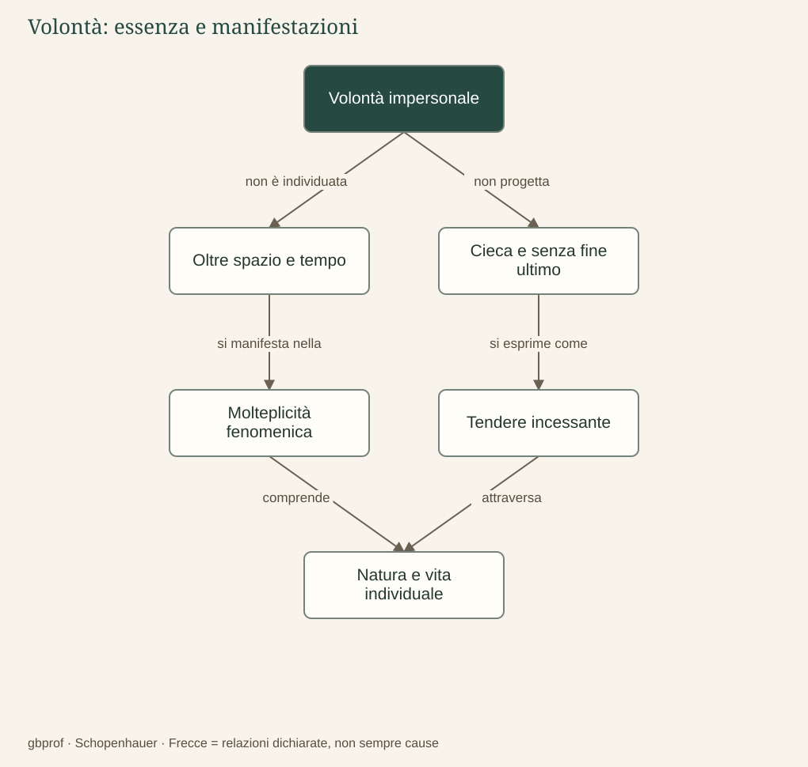

A · Comprendere Schopenhauer · 04
La Volontà
Che cosa muove realmente la vita?
Quando diciamo «ho la volontà di studiare», indichiamo di solito una decisione cosciente orientata verso uno scopo. La Volontà di Schopenhauer non coincide con questa facoltà personale. Il termine nomina l’essenza della realtà quale si rivela attraverso il volere vissuto nel corpo e viene poi riconosciuta, mediante un’interpretazione metafisica, nei diversi gradi della natura. La decisione ragionata è soltanto una manifestazione particolare; il fondamento non è a sua volta una grande mente che delibera.
Un impulso senza un progetto universale
Definire la Volontà cieca significa negarle conoscenza e direzione razionale; definirla impersonale significa che non appartiene a un individuo cosmico; definirla incessante significa che non trova un compimento finale capace di arrestarne il tendere. Un animale cerca il cibo e una persona si propone una carriera: i loro atti hanno fini determinati. Da questo, però, non segue che l’esistenza nel suo complesso proceda verso uno scopo ultimo. La distinzione tra fini particolari e assenza di un fine complessivo evita un equivoco frequente.
La vita cerca continuamente di conservarsi e riprodursi; le forze naturali operano anche dove non esistono coscienza e deliberazione. Schopenhauer interpreta questi differenti fenomeni come oggettivazioni della Volontà, cioè come modi nei quali la sua essenza diventa conoscibile. Non sta sostenendo che una pietra immagini il suolo e desideri raggiungerlo, né che una pianta formuli un progetto. Una simile personificazione trasformerebbe una tesi metafisica in una favola psicologica.
Oltre spazio, tempo e causalità
La molteplicità e la successione appartengono alla rappresentazione. La Volontà, considerata in sé, non è quindi una cosa localizzabile accanto alle altre, né un evento nato in un certo istante; non ricade nelle forme mediante le quali distinguiamo gli individui. Anche chiamarla «unica» richiede cautela: non è il numero uno di una serie di oggetti, ma ciò che non è frammentato secondo spazio e tempo. Il termine indica il superamento della molteplicità fenomenica.
Per la stessa ragione non bisogna disegnare una freccia causale ordinaria dalla Volontà ai fenomeni, come se essa producesse il mondo con un urto iniziale. Volontà e rappresentazione sono due aspetti della medesima realtà. La causalità collega i fenomeni fra loro; l’oggettivazione esprime invece il rapporto tra ciò che appare e il significato metafisico che Schopenhauer vi riconosce.
Questa concezione toglie all’uomo una centralità rassicurante. La ragione non è il sovrano dell’universo e la felicità umana non ne costituisce la destinazione. Rimane tuttavia una differenza tra comprendere la tesi e accettarla: la scienza descrive e verifica relazioni fra fenomeni, mentre la Volontà è una proposta interpretativa sull’essenza del mondo. Non possiamo presentarla agli studenti come una legge fisica dimostrata.
Il problema in un’immagine
Dopo la lettura
Mappa di sintesi


Leggi la mappa in forma testuale
- Volontà impersonale non è individuata Oltre spazio e tempo.
- Volontà impersonale non progetta Cieca e senza fine ultimo.
- Oltre spazio e tempo si manifesta nella Molteplicità fenomenica.
- Cieca e senza fine ultimo si esprime come Tendere incessante.
- Molteplicità fenomenica comprende Natura e vita individuale.
- Tendere incessante attraversa Natura e vita individuale.
Fermati sul problema
Perché chiamare la Volontà una causa fisica nascosta è improprio?
Confronta il tuo ragionamento
La causalità collega fenomeni; Volontà e rappresentazione sono due aspetti della realtà. La cosa in sé non è un evento nello spazio e nel tempo: il rapporto di oggettivazione non è una catena di urti.